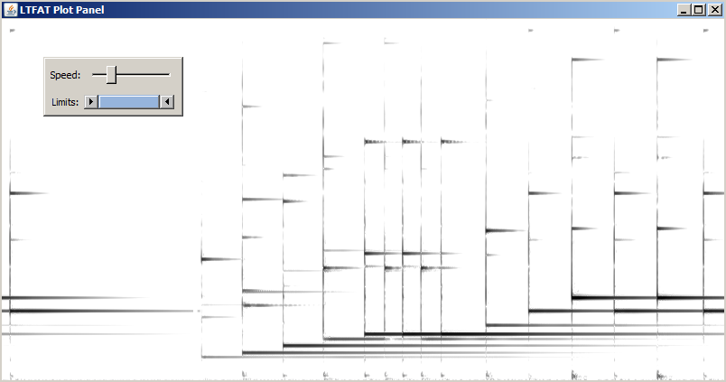

Allows audio processing in real-time directly from Matlab/Octave without need for any additional toolboxes and low-lewel programming. Together with the time-frequency analysis and synthesis capabilities of LTFAT, the framework allows audio processing directly in the transform domain.
The basic workflow consist of setting up the blockstream source and parameters using block function and creating the control panel blockpanel prior to entering the processing loop. Closing the control panel issues breaking from the loop and correctly finalizing the program run. Hitting the Ctrl-C keyboard shorcut to break from the loop skips all code located after the loop.
The following minimal working example takes an input from a microphone and routes it trough the loop to the speakers allowing setting gain in a range of -20 to 20 dB.
block('playrec');
p = blockpanel({'GdB','Gain',-20,20,0,21});
while p.flag
gain = blockpanelget(p,'GdB');
f = blockread();
blockplay(f*10^(gain/20));
end
blockdone(p);
Each iteration, function blockread provides array of samples (1024 by defaut) which are enqueued to be played
by the blockplay function. Two parameters of p are read each iteration, the slider position
by blockpanelget and the p.flag value, which is set to false when the control panel is closed by the user.
The Frame framework can be used in conjuction with the block-processing framework to do the blockwise analysis and synthesis. Frame objects has to be "accelerated" for the chosen block length prior entering the processing loop and the length cannot be changed inside of the loop. The following simple demo shows how the frame objects are used in the block proc. framework in order to achieve real-time DGT coefficient thresholding.
% Buffer length
bufLen = 1024;
% Setup blocktream
fs=block('playrec','L',bufLen);
% Number of frequency channels
M = 1000;
% Hop factor
a = 40;
% Window length in ms
winLenms = 20;
% Create pair of frames
[F,Fdual] = framepair('dgtreal',{'hann',floor(fs*winLenms/1e3)},'dual',a,M);
p = blockpanel({
{'GdB','Gain',-20,20,0,21},...
{'Thr','Treshold',0,0.1,0,1000}
});
% Choose block handling alg. and accelerate
[Fa,Fs] = blockframepairaccel(F,Fdual, bufLen,'segola');
flag = 1;
%Loop until end of the stream (flag) and until panel is opened
while flag && p.flag
% Obtain parameters from the control panel
gain = 10^(p.getParam('GdB')/20); % dB -> val
thres = p.getParam('Thr');
% Read block of length bufLen
[f,flag] = blockread();
% Apply analysis operator of the frame
c = blockana(Fa, f*gain);
% Apply thresholding
c = thresh(c,thres,'soft');
% Apply synthesis operator the dual frame
fhat = real(blocksyn(Fs, c, size(f,1)));
% Play the block
blockplay(fhat);
end
blockdone(p);
demo_blockproc_slidingsgram('gspi.wav','loop');
Current features include:
Frequency axis zooming using mouse wheel.
Right-click popup menu for choosing the rolling speed and limits of the coefficients.

Portaudio library which is accessed trough the MEX interface Playrec, both being free, open-source libraries. Portaudio is a cross-platform library that can be compiled and run on many platforms including Windows, Macintosh OS X, and Unix. Recent versions of Matlab contain the Portaudio library already compiled in the basic installation which can be checked by using the following command
dir([matlabroot,filesep,'bin',filesep,computer('arch'),filesep,'*portaudio*'])
It is however advisable to use a more recent version of Portaudio or build it by yourself, possibly allowing support for additional APIs like
Steinberg ASIO (on Windows) or JACK (multiplatform). Compilation instructions can be found at the Portaudio homepage or
you can obtain portaudio using package manager e.g. on Debin/Ubuntu
sudo apt-get install portaudio19-dev
The real-time processing capabilities of Matlab/Octave are quite limited when compared to the professional low-level solutions like Steinberg VST plugins, therefore we cannot recommend using the block-processing framework in settings where the glitch-less playback is a must. The obvious source of latency is the length of the working buffer for a given sampling frequency. The overhead of the data handling in Matlab/Octave does not allow working with small buffer lengths so reasonable default value making a good tradeof is 1024 samples (23ms at 44,1kHz), but feel free to experiment since this value is mainly dependent on the processing algorithm complexity. The additional latency and the overal playback performance is operating system, device, device driver and sound API dependent, which is inherited from the Portaudio library. Please refer to the discussion on latency at the Portaudio homepage here.
On Windows with a general onboard soundcard, we achieved the best performance with the ASIO4ALL driver. On Linux, the JACK seems to be very well suited for a good performance real-time audio.
JACK as it is originaly Linux program it should have better support on Linux.
We do not have any experience in doing audio on OS X. Any contribution is welcomed.